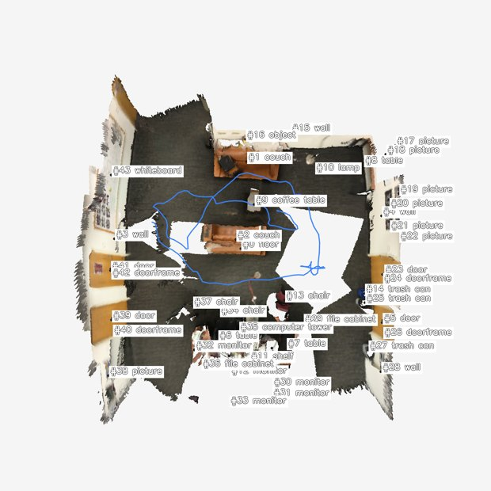
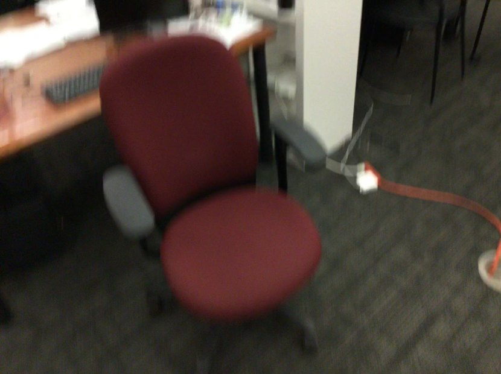
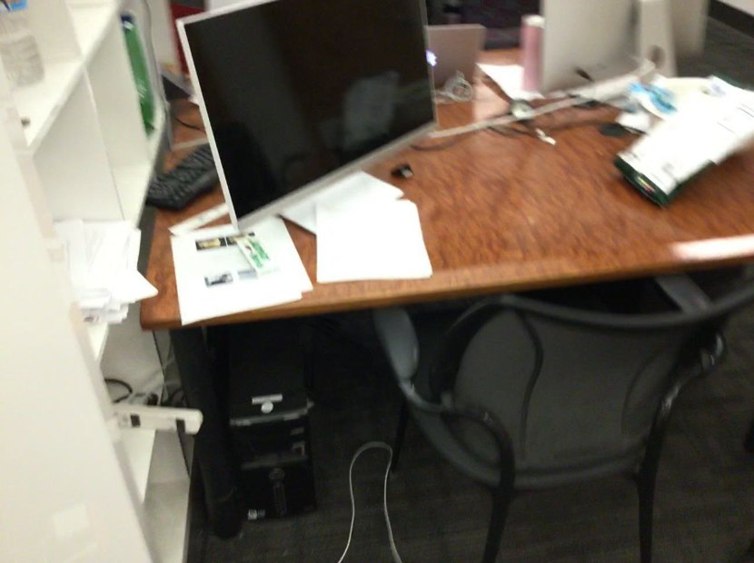
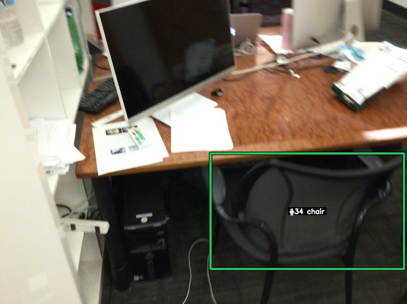
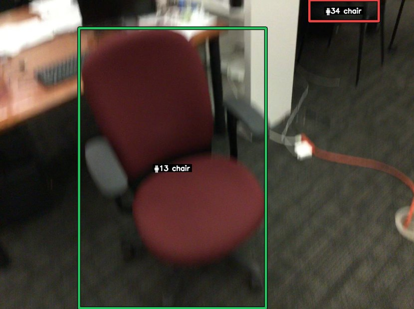
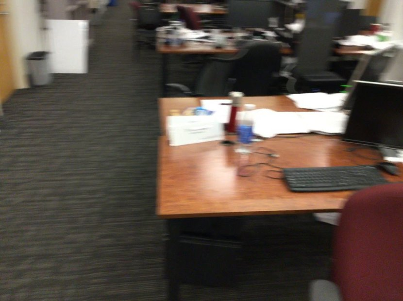
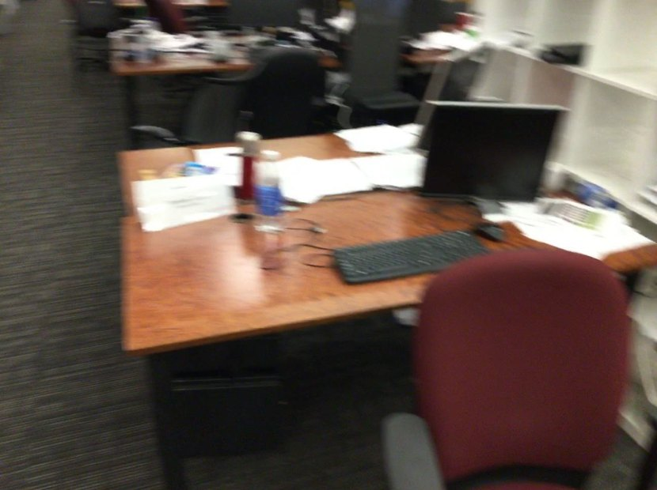
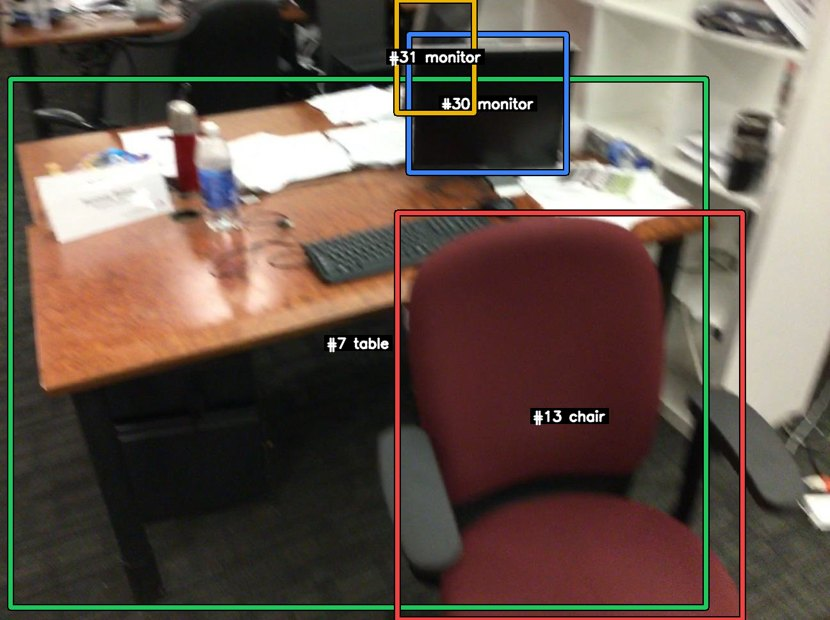
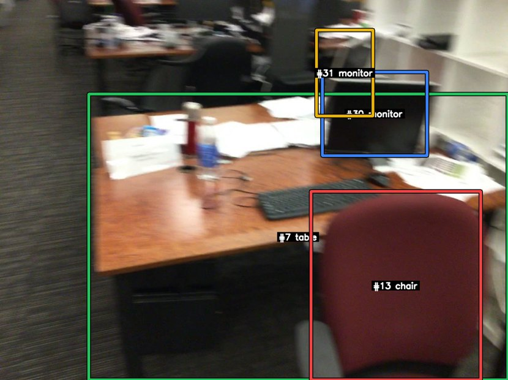
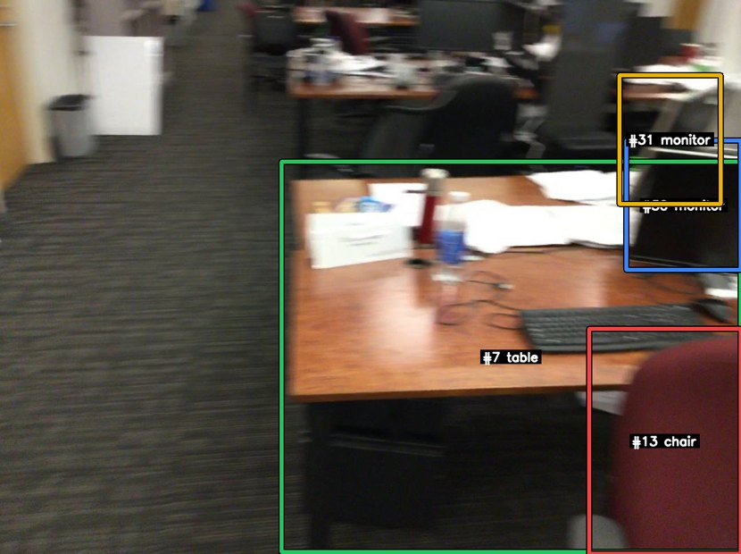

Run 001 · NR3D visual grounding (v9 catalog-first)
red office chair that's facing away from desk
scannet/scene0329_00::13::29568
正确
GT#13
Selected#13
Confidence0.96
IoU1.0000
SplitHard / View-Dep
Tool calls14
Turn 0 — Agent 看到的初始上下文（v9 catalog-first）
v9 的 build_user_message 只注入 BEV 图像 和 SceneCatalog 文字目录，不 注入任何第一人称关键帧。Agent 必须主动调用 selector / mark_frame_with_bbox（v9.1）或历史 trace 中的 view_keyframe 等工具才能拿到第一人称证据。

data/nr3d/scannet/scene0329_00/pack_nr3d_v9_catalog_first/bev/scene_bev_nr3d.pngSceneCatalog (`Proposals by category` 块的展开形式)
catalog 为空
Agent 调用栈（每个工具一张卡片）
卡片按真实工具调用顺序展开。tool_input 与 response_text 保留原文（已做长度截断），其它说明为中文。工具家族用左侧色条区分：setup catalog selector view mark bbox legacy reason final。
01 load_skill 加载 playbook 加载技能：scene-exploration-playbook
模型发起的工具输入
{
"skill_name": "scene-exploration-playbook"
}
工具返回（原文，已截断）
# Scene Exploration Playbook (shared, prerequisite) You start each scene with two views: a BEV (top-down) with `#id category` labels + camera trajectory, and a `SceneCatalog` text inventory. Neither is first-person evidence — fetch first-person frames before finalising any answer that depends on appearance, count, state, or relations. ## First move — almost always `select_by_text(query)` `select_by_text(query, k≤3)` runs Stage-1 query parsing and returns up to 3 candidate first-person RGB frames in a single call. This is the shortest path from language to ground truth and should be your default entry point. The returned JSON lists each frame's `visible_proposal_ids` + camera pose so you can decide which of the ≤3 frames is worth a closer look. ## Refinement selectors (after the first batch) Once `select_by_text` returned frames and you know which catalog IDs you're tracking, the catalog-driven selectors are instant and inject their own ≤3 RGB frames: | Selector | When to use | | --- | --- | | `select_by_proposal(ids, require_all, k)` | Frames showing specific catalog IDs (e.g. after text returned wrong instance). | | `select_by_frame_neighbor(anchor_frame_id, mode='temporal'\|'viewpoint_diverse')` | Expand around one good frame. | | `select_by_region(region, region_type='bev_2d'\|'bbox_3d')` | A BEV cluster looks promising — fetch frames overlooking that region. | | `select_by_coverage(method='obj_iou'\|'pose_depth', seen_frame_ids?)` | You need diverse coverage of unseen frames. | All selectors cap `k` at 3. Image dedup is automatic: frames already injected are listed with `already_seen=true` and not re-injected. ## Looking closer at one frame - `mark_frame_with_bbox(frame_id, labels=?, ids=?)` — render a single frame with high-contrast bounding boxes around the labels / ids you named. Requires at least one of `labels` or `ids`. Use this when a selector returned a frame and you want to verify the chosen catalog entry against the actual pixels. - `request_crops(frame_id, bbox_2d)` — pixel zoom into a region of a frame you have already seen. ## Catalog queries (text-only) - `list_scene_proposals(category=?, region_bev=?, limit=?)` — scene-wide. - `list_frame_proposals(frame_id)` — what's visible in one frame. - `inspect_proposal(proposal_id)` — proposal metadata + frames_appeared. ## BEV inspection - `view_bev()` — re-inject the original full BEV. - `view_bev(highlight=[#a, #b])` — re-render the same perspective BEV with only those proposals labelled. ## Anti-patterns - Answering from BEV labels alone. BEV is a map, not ground truth. - Calling `mark_frame_with_bbox` on a frame you have not seen yet (selectors already injected it; mark is for the "verify this one" step). - Calling more than two selectors before any `mark_frame_with_bbox` — that means you are collecting candidates without ever verifying. - `request_crops` before any selector — crops zoom a frame; the host frame must already be in context. ## The loop 1. `select_by_text(query)` (or, when you already know the IDs, `select_by_proposal`). 2. Scan the ≤3 returned frames + the BEV. 3. `mark_frame_with_bbox` on **the** frame that looks decisive. 4. (Optional) `request_crops` for fine attributes; or refine with another selector if step 3 was inconclusive. 5. `submit_final`.
02 load_skill 加载 playbook 加载技能：vg-grounding-playbook
模型发起的工具输入
{
"skill_name": "vg-grounding-playbook"
}
工具返回（原文，已截断）
# VG Grounding Playbook (v9.1)
Prerequisite: `load_skill('scene-exploration-playbook')` first.
You are grounding a natural-language referring expression to **one** proposal in
the SceneCatalog. The output must be a single `proposal_id` (or `-1` if the target
is genuinely absent from the catalog — OOD case).
## Standard flow
1. **Read the BEV image** and the `Proposals by category:` block in the task
message. Identify candidate `#id`s by category (e.g. "brown chair" → all
`chair` proposals).
2. **First move: `select_by_text(query)`** — runs Stage-1 query parsing and
returns ≤3 candidate first-person RGB frames + their `visible_proposal_ids`
in one call. If catalog IDs are already obvious from the BEV labels,
`select_by_proposal(proposal_ids=[candidate ids])` is the direct shortcut.
3. **Verify the chosen candidate** with
`mark_frame_with_bbox(frame_id, ids=[#a, #b, …])` (or
`labels=['chair', …]`). This renders the frame with high-contrast bounding
boxes around the named catalog entries; pixels confirm which proposal the
referring expression matches.
4. **Disambiguate spatial relations** with `compare_proposals_spatial(
candidate_ids=[…], anchor_id=#x, relation='left_of'|'right_of'|'closer_to'|…)`
when the query involves a spatial relation.
5. **Submit** with `submit_final(payload={"proposal_id": <id>}, …)`. The
evidence-frame guard requires that at least one `mark_frame_with_bbox`
call covered the submitted proposal id.
## Tools at a glance
- `select_by_text(query, k=3, hidden_categories?)` — **first move**;
language → ≤3 RGB candidate frames.
- `select_by_proposal(proposal_ids, require_all=False, k=3)` — fetch
frames containing specific catalog IDs.
- `select_by_frame_neighbor(anchor_frame_id, mode='temporal'|'viewpoint_diverse')`.
- `select_by_region(region, region_type='bev_2d'|'bbox_3d')`.
- `select_by_coverage(method='obj_iou'|'pose_depth')`.
- `mark_frame_with_bbox(frame_id, labels|ids)` — high-contrast
annotated zoom; required before `submit_final` for VG (see
evidence_frame_guard).
- `list_frame_proposals(frame_id)`, `list_scene_proposals(...)`,
`inspect_proposal(id)` — text-only catalog queries.
- `view_bev(highlight=[ids])` — re-render BEV focused on subset.
- `compare_proposals_spatial(candidate_ids, anchor_id, relation)` —
spatial disambiguation (TADG-relevant).
## Guards (read this before submit)
- **TADG** (Target-Anchor Disambiguation Guard): if the query mentions an
anchor (e.g. "next to the kitchen counter"), TADG will block submission
unless `compare_proposals_spatial` proved the chosen proposal satisfies the
relation. If TADG fires, run the comparison and resubmit.
- **no_match_guard**: if selectors did not surface any candidate of the
queried category, submit `proposal_id=-1` (OOD).
- **evidence_frame_guard**: at least one `mark_frame_with_bbox` call whose
filter (`ids=` or `labels=`) covers the submitted proposal id must appear
in the trace. Plain RGB injection via a selector does not satisfy this
guard.
## OOD policy
If after exhaustive selectors + ≥3 `mark_frame_with_bbox` calls you cannot
locate the referent, submit `proposal_id=-1` with a rationale explaining what
categories / regions you searched. Do not invent an `id`.
## Anti-patterns
- Submitting based on BEV labels alone (no `mark_frame_with_bbox`).
- Calling `mark_frame_with_bbox` on a frame you have not seen yet (it must
come from a selector first).
- Calling more than two selectors before any `mark_frame_with_bbox` — that
means you are collecting candidates without ever verifying.
- Querying `request_crops` before any selector returned a host frame.
03 select_by_text 按文本搜帧 文本 query=「red office chair facing away from desk」 top-3：返回 3 帧 [100:001000-rgb.png, 131:001310-rgb.png, 96:000960-rgb.png]
模型发起的工具输入
{
"query": "red office chair facing away from desk",
"k": 3,
"hidden_categories": [
"wall",
"floor",
"door",
"doorframe"
]
}
工具返回（原文，已截断）
{"hypothesis_summary": "target=None kind=HypothesisKind.DIRECT", "frames": [{"frame_id": 100, "visible_proposal_ids": [7, 11, 13, 29, 30, 34, 36], "bev_xy": null, "camera_yaw": null, "selected_because": "select_by_text(query='red office chair facing away from desk')", "image_path": "data/nr3d/scannet/scene0329_00/raw/001000-rgb.png", "already_seen": false}, {"frame_id": 131, "visible_proposal_ids": [6, 11, 12, 32, 34, 35, 36], "bev_xy": null, "camera_yaw": null, "selected_because": "select_by_text(query='red office chair facing away from desk')", "image_path": "data/nr3d/scannet/scene0329_00/raw/001310-rgb.png", "already_seen": false}, {"frame_id": 96, "visible_proposal_ids": [7, 11, 13, 29, 30, 31], "bev_xy": null, "camera_yaw": null, "selected_because": "select_by_text(query='red office chair facing away from desk')", "image_path": "data/nr3d/scannet/scene0329_00/raw/000960-rgb.png", "already_seen": false}]}

data/nr3d/scannet/scene0329_00/raw/001000-rgb.png

data/nr3d/scannet/scene0329_00/raw/001310-rgb.png
data/nr3d/scannet/scene0329_00/raw/000960-rgb.png
04 inspect_proposal 检查候选元数据 候选 #13（chair），出现于 22 帧
模型发起的工具输入
{
"proposal_id": 13
}
工具返回（原文，已截断）
{"proposal_id": 13, "category": "chair", "score": 1.0, "bbox_3d_9dof": [1.4034850719338576, -1.3562050007135094, 0.6193364183707674, 0.5310726812784021, 0.4040144274264998, 1.0429650749945794, -0.19213563602841321, 0.6092718668408854, -0.06204174377517503], "frames_appeared": [94, 95, 96, 97, 98, 99, 100, 101, 102, 103, 104, 108, 109, 118, 119, 120, 121, 122, 123, 124, 125, 126], "source": "gt"}
05 mark_frame_with_bbox 带框标注帧 (v9.1) 带框标注 · frame 131 · ids=[34] · marked_file=frame_131_ids_34.png
模型发起的工具输入
{
"frame_id": 131,
"labels": [],
"ids": [
34
]
}
工具返回（原文，已截断）
frame_id=131 mark image at data/nr3d/scannet/scene0329_00/pack_nr3d_v9_catalog_first/bev/filtered_marks/frame_131_ids_34.png; filtered_by={'labels': [], 'ids': [34]}; visible_proposals=[34]; categories=['chair']; left_to_right=['34:chair']; boxes_2d={34: [670, 488, 1286, 856]}

data/nr3d/scannet/scene0329_00/pack_nr3d_v9_catalog_first/bev/filtered_marks/frame_131_ids_34.png
06 mark_frame_with_bbox 带框标注帧 (v9.1) 带框标注 · frame 100 · ids=[13, 34] · marked_file=frame_100_ids_13_34.png
模型发起的工具输入
{
"frame_id": 100,
"labels": [],
"ids": [
13,
34
]
}
工具返回（原文，已截断）
frame_id=100 mark image at data/nr3d/scannet/scene0329_00/pack_nr3d_v9_catalog_first/bev/filtered_marks/frame_100_ids_13_34.png; filtered_by={'labels': [], 'ids': [13, 34]}; visible_proposals=[13, 34]; categories=['chair', 'chair']; left_to_right=['13:chair', '34:chair']; boxes_2d={13: [247, 88, 832, 965], 34: [968, 0, 1185, 66]}

data/nr3d/scannet/scene0329_00/pack_nr3d_v9_catalog_first/bev/filtered_marks/frame_100_ids_13_34.png
07 inspect_proposal 检查候选元数据 候选 #34（chair），出现于 28 帧
模型发起的工具输入
{
"proposal_id": 34
}
工具返回（原文，已截断）
{"proposal_id": 34, "category": "chair", "score": 1.0, "bbox_3d_9dof": [-0.42406921047057966, -1.753662103953962, 0.6751234313214628, 0.7525091483855285, 0.7671079943927859, 0.36357231118190003, -0.8382997285112739, 0.32347369779275303, 0.29685122806267256], "frames_appeared": [100, 101, 102, 103, 104, 105, 106, 107, 108, 118, 119, 120, 121, 122, 123, 124, 125, 126, 127, 128, 129, 130, 131, 132, 133, 134, 135, 136], "source": "gt"}
08 request_crops 请求局部裁剪 frame_indices=[100, 131] object_terms=['chair', 'table', 'monitor']：request_crops received object_terms=['chair', 'table', 'monitor']; concrete crop generation handled by per-benchmark wrapper.
模型发起的工具输入
{
"request_text": "Zoom around the visible chair candidates and nearby desk/table area to determine which chair is red and facing away from the desk.",
"frame_indices": [
100,
131
],
"object_terms": [
"chair",
"table",
"monitor"
]
}
工具返回（原文，已截断）
request_crops received object_terms=['chair', 'table', 'monitor']; concrete crop generation handled by per-benchmark wrapper.
09 select_by_proposal 按候选 id 搜帧 按 proposal_ids=[13, 34] 搜帧：返回 3 帧 [94:000940-rgb.png, 95:000950-rgb.png, 96:000960-rgb.png]
模型发起的工具输入
{
"proposal_ids": [
13,
34
],
"require_all": false,
"k": 3
}
工具返回（原文，已截断）
{"hypothesis_summary": "", "frames": [{"frame_id": 94, "visible_proposal_ids": [7, 13, 29, 30, 31], "bev_xy": null, "camera_yaw": null, "selected_because": "select_by_proposal(proposal_ids=[13, 34], require_all=False)", "image_path": "data/nr3d/scannet/scene0329_00/raw/000940-rgb.png", "already_seen": false}, {"frame_id": 95, "visible_proposal_ids": [7, 11, 13, 29, 30, 31], "bev_xy": null, "camera_yaw": null, "selected_because": "select_by_proposal(proposal_ids=[13, 34], require_all=False)", "image_path": "data/nr3d/scannet/scene0329_00/raw/000950-rgb.png", "already_seen": false}, {"frame_id": 96, "visible_proposal_ids": [7, 11, 13, 29, 30, 31], "bev_xy": null, "camera_yaw": null, "selected_because": "select_by_proposal(proposal_ids=[13, 34], require_all=False)", "image_path": "data/nr3d/scannet/scene0329_00/raw/000960-rgb.png", "already_seen": false}]}

data/nr3d/scannet/scene0329_00/raw/000940-rgb.png

data/nr3d/scannet/scene0329_00/raw/000950-rgb.png

data/nr3d/scannet/scene0329_00/raw/000960-rgb.png
10 mark_frame_with_bbox 带框标注帧 (v9.1) 带框标注 · frame 96 · labels=['table', 'monitor'] · ids=[13] · marked_file=frame_96_ids_7_13_30_31.png
模型发起的工具输入
{
"frame_id": 96,
"labels": [
"table",
"monitor"
],
"ids": [
13
]
}
工具返回（原文，已截断）
frame_id=96 mark image at data/nr3d/scannet/scene0329_00/pack_nr3d_v9_catalog_first/bev/filtered_marks/frame_96_ids_7_13_30_31.png; filtered_by={'labels': ['table', 'monitor'], 'ids': [13]}; visible_proposals=[7, 31, 30, 13]; categories=['table', 'monitor', 'monitor', 'chair']; left_to_right=['7:table', '31:monitor', '30:monitor', '13:chair']; boxes_2d={7: [16, 123, 1102, 948], 31: [619, 0, 740, 176], 30: [638, 53, 884, 269], 13: [620, 332, 1159, 967]}

data/nr3d/scannet/scene0329_00/pack_nr3d_v9_catalog_first/bev/filtered_marks/frame_96_ids_7_13_30_31.png
11 mark_frame_with_bbox 带框标注帧 (v9.1) 带框标注 · frame 95 · labels=['table', 'monitor'] · ids=[13] · marked_file=frame_95_ids_7_13_30_31.png
模型发起的工具输入
{
"frame_id": 95,
"labels": [
"table",
"monitor"
],
"ids": [
13
]
}
工具返回（原文，已截断）
frame_id=95 mark image at data/nr3d/scannet/scene0329_00/pack_nr3d_v9_catalog_first/bev/filtered_marks/frame_95_ids_7_13_30_31.png; filtered_by={'labels': ['table', 'monitor'], 'ids': [13]}; visible_proposals=[7, 31, 30, 13]; categories=['table', 'monitor', 'monitor', 'chair']; left_to_right=['7:table', '31:monitor', '30:monitor', '13:chair']; boxes_2d={7: [226, 239, 1295, 967], 31: [807, 76, 951, 295], 30: [822, 183, 1089, 396], 13: [793, 487, 1226, 967]}

data/nr3d/scannet/scene0329_00/pack_nr3d_v9_catalog_first/bev/filtered_marks/frame_95_ids_7_13_30_31.png
12 mark_frame_with_bbox 带框标注帧 (v9.1) 带框标注 · frame 94 · labels=['table', 'monitor'] · ids=[13] · marked_file=frame_94_ids_7_13_30_31.png
模型发起的工具输入
{
"frame_id": 94,
"labels": [
"table",
"monitor"
],
"ids": [
13
]
}
工具返回（原文，已截断）
frame_id=94 mark image at data/nr3d/scannet/scene0329_00/pack_nr3d_v9_catalog_first/bev/filtered_marks/frame_94_ids_7_13_30_31.png; filtered_by={'labels': ['table', 'monitor'], 'ids': [13]}; visible_proposals=[7, 13, 31, 30]; categories=['table', 'chair', 'monitor', 'monitor']; left_to_right=['7:table', '13:chair', '31:monitor', '30:monitor']; boxes_2d={7: [492, 282, 1295, 964], 13: [1030, 574, 1295, 967], 31: [1083, 131, 1260, 356], 30: [1095, 245, 1295, 471]}

data/nr3d/scannet/scene0329_00/pack_nr3d_v9_catalog_first/bev/filtered_marks/frame_94_ids_7_13_30_31.png
13 submit_final 提交最终答案 提交 {'proposal_id': 13, 'confidence': 0.8}；理由：Proposal 13 is the best match. In frames 94-96, proposal 13 is the office chair directly adjacent to the desk/table proposal 7 with monitors 30/31 on top, and its visible backrest is oriented toward the camera, indicating the chair is facin
模型发起的工具输入
{
"payload": {
"proposal_id": 13,
"confidence": 0.8
},
"rationale": "Proposal 13 is the best match. In frames 94-96, proposal 13 is the office chair directly adjacent to the desk/table proposal 7 with monitors 30/31 on top, and its visible backrest is oriented toward the camera, indicating the chair is facing away from the desk surface. Proposal 34 appears in frames 100/131 but is not the desk chair in front of the monitor setup; it is a separate chair farther from the workstation and less consistent with the description.",
"evidence_refs": [],
"tadg_blocked": false,
"tadg_force_passed": false,
"tadg_top1_pid": null,
"tadg_submitted_pid": null,
"tadg_relation": null,
"tadg_anchor_id": null,
"tadg_subcase": null,
"tadg_ranked_ids": null,
"tadg_message": null,
"no_match_guard_blocked": false,
"no_match_guard_force_passed": false,
"no_match_guard_category_candidate_ids": null,
"no_match_guard_category_candidate_labels": null,
"no_match_guard_viewed_uninspected_ids": null,
"no_match_guard_viewed_uninspected_labels": null,
"no_match_guard_message": null,
"evidence_frame_guard_blocked": false,
"evidence_frame_guard_submitted_pid": 13,
"evidence_frame_guard_cited_frame_ids": null,
"evidence_frame_guard_visible_proposal_ids": null,
"evidence_frame_guard_visible_proposal_labels": null,
"evidence_frame_guard_relative_position_conflict": false,
"evidence_frame_guard_relative_position_direction": null,
"evidence_frame_guard_relative_position_alternatives": null,
"evidence_frame_guard_relative_position_alternative_labels": null,
"evidence_frame_guard_message": null
}
工具返回（原文，已截断）
submitted; rationale='Proposal 13 is the best match. In frames 94-96, proposal 13 is the office chair directly adjacent to the desk/table proposal 7 with monitors 30/31 on top, and its visible backrest is oriented toward the camera, indicating the chair is facing away from the desk surface. Proposal 34 appears in frames 100/131 but is not the desk chair in front of the monitor setup; it is a separate chair farther from the workstation and less consistent with the description.'; evidence_refs=0
14 submit_final 提交最终答案 提交 {'proposal_id': 13, 'confidence': 0.96}；理由：The newly viewed images make the target clear. In frame 96, proposal 13 is a red office chair right beside the desk/workstation, and the marked image shows #13 on that red chair. In frame 100, proposal 34 is a different dark gray/black chai
模型发起的工具输入
{
"payload": {
"proposal_id": 13,
"confidence": 0.96
},
"rationale": "The newly viewed images make the target clear. In frame 96, proposal 13 is a red office chair right beside the desk/workstation, and the marked image shows #13 on that red chair. In frame 100, proposal 34 is a different dark gray/black chair tucked under another desk, not red. The query asks for the red office chair facing away from the desk; proposal 13 matches both the color and workstation context, while 34 does not.",
"evidence_refs": [],
"tadg_blocked": false,
"tadg_force_passed": false,
"tadg_top1_pid": null,
"tadg_submitted_pid": null,
"tadg_relation": null,
"tadg_anchor_id": null,
"tadg_subcase": null,
"tadg_ranked_ids": null,
"tadg_message": null,
"no_match_guard_blocked": false,
"no_match_guard_force_passed": false,
"no_match_guard_category_candidate_ids": null,
"no_match_guard_category_candidate_labels": null,
"no_match_guard_viewed_uninspected_ids": null,
"no_match_guard_viewed_uninspected_labels": null,
"no_match_guard_message": null,
"evidence_frame_guard_blocked": false,
"evidence_frame_guard_submitted_pid": 13,
"evidence_frame_guard_cited_frame_ids": [
96,
100
],
"evidence_frame_guard_visible_proposal_ids": null,
"evidence_frame_guard_visible_proposal_labels": null,
"evidence_frame_guard_relative_position_conflict": false,
"evidence_frame_guard_relative_position_direction": null,
"evidence_frame_guard_relative_position_alternatives": null,
"evidence_frame_guard_relative_position_alternative_labels": null,
"evidence_frame_guard_message": null
}
工具返回（原文，已截断）
submitted; rationale='The newly viewed images make the target clear. In frame 96, proposal 13 is a red office chair right beside the desk/workstation, and the marked image shows #13 on that red chair. In frame 100, proposal 34 is a different dark gray/black chair tucked under another desk, not red. The query asks for the red office chair facing away from the desk; proposal 13 matches both the color and workstation context, while 34 does not.'; evidence_refs=0